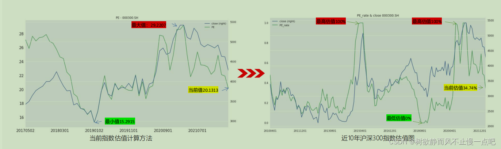

发布时间： · 博客园原文
文字与代码来源：2022年第三届“大湾区杯”粤港澳金融数学建模竞赛在线讲座-6_哔哩哔哩_bilibili
指数估值择时策略
采用指数所有成分股的市盈率指标计算得出，用于衡量指数整体的估值水平，在牛市中，指数估值往往能达到80%及以上，而在熊市中指数估值可能低于20%及以下。投资者通过观察指数估值来判定当前市场估值状况，在低估时买入，高估时卖出，完成长周期指数择时。
• 关键词：估值水平，低估，高估

1. 计算方法
当前指数市盈率 = 当前所有指数成份股市盈率的中位数
近五年指数市盈率最大值 = 取近五年中指数市盈率的极大值
近五年指数市盈率最小值 = 取近五年中指数市盈率的极小值
指数估值 = （当前指数市盈率-近五年指数市盈率最小值）/（近五年指数市盈率最大值-近五年指数市盈率最小值）
2. 择时逻辑
看多：当指数估值（5年）从20%下方涨回20%上方时，市场从下跌阶段反转成上涨阶段，市场热度增加，做多指数
看空：当指数估值（5年）从80%上方跌回80%下方时，市场从上涨阶段反转成下跌阶段，市场回归理性，做空指数
3. 代码
import pandas as pd
import numpy as np
# 初始化函数,全局只运行一次
def init(context):
# 设置要操作的指数
context.security = '000300.SH'
# 设置基准收益：沪深300指数
set_benchmark(context.security)
# 每周第一个交易日运行
run_weekly(trade,1)
# 估值的年限
context.year = 5
# 估值序列储存
context.pelist = []
## 开盘时运行函数
def trade(context, bar_dict):
# 获取时间
date = get_last_datetime().strftime('%Y-%m-%d')
# 获取估值
pe_rate = get_index_valuation(context,date,context.security)
# 加入序列
context.pelist.append(pe_rate)
# 判定估值信号
if len(context.pelist)>1 and context.pelist[-2]<20 and context.pelist[-1]>=20:
# 全仓
order_target_percent(context.security,1)
# 打印
print('买入指数{}:当前估值百分位{}'.format(context.security,pe_rate))
elif len(context.pelist)>1 and context.pelist[-2]>80 and context.pelist[-1]<=80:
# 空仓
order_target(context.security,0)
# 打印
print('卖出指数{}:当前估值百分位{}'.format(context.security,pe_rate))
# 创建函数：获取指数估值水平
def get_index_valuation(context,date,index_code):
'''
输出：市盈率
'''
# 创建dataframe
datadf = pd.DataFrame(columns = ['PE'])
# 创建月初交易日列表
monthdatelist = []
# 获取日期
datelist = get_trade_days(None,date,context.year*250).strftime('%Y%m%d')
# 循环时间序列
for t in range(1,len(datelist)):
# 判断月度
if datelist[t-1][4:6]!=datelist[t][4:6]:
# 添加新月度日期
monthdatelist.append(datelist[t])
# 循环月度日期
for date in monthdatelist[-context.year*12:]:
# 调用指数估值指标计算函数
datadf.loc[date] = get_index_PB_PE_PB1(date,index_code)
# 最大值
values_max = datadf.max()
# 最小值
values_min = datadf.min()
# 当前值
values_now = datadf.ix[-1]
# 百分位
T = (values_now - values_min)/(values_max - values_min)
# 输出
return round(T.PE,4)*100
# 创建函数：指数估值指标计算
def get_index_PB_PE_PB1(date,indexcode):
'''
函数使用注释：
输入：日期，指数代码
算法：中位数
输出：指数市盈率
'''
# 获取成份股
stocks = get_index_stocks(indexcode,date)
# 获取市盈率数据
q = query(factor.symbol,
factor.pe_ttm).filter(
factor.symbol.in_(stocks),
factor.date == date)
# 获取数据
df = get_factors(q)
# 计算中位数
PE_index = df.median().factor_pe_ttm
return [PE_index]指数轮动择时策略
1. 基本逻辑（动量效应）
强者越强：涨幅最大的指数，投资者参与热度高，不断吸引新的资金进入，推动指数持续上涨
弱者越弱：出现跌幅的指数，投资者愈发认为市场表现较弱并撤出资金，导致指数进一步下跌
2. 交易逻辑
每个月第一个交易日，计算所有指数ETF近20个交易日的涨幅，并排序得出涨幅最大的指数及涨幅值
做多：如果涨幅最大的指数ETF，涨幅值大于0，则做多指数，买入该ETF
做空：如果涨幅最大的指数ETF，其涨幅值小于等于0，则看空指数，保持空仓
风控：监控持仓ETF，每天计算近20个交易日的涨幅，如果涨幅值小于等于0，则卖出。
3. 代码
import pandas as pd
#初始化函数
def init(context):
# 按月交易第一个交易日
run_monthly(trade,date_rule=1)
# 输入需要交易的ETF
context.security = ['159901.OF', # 深证100ETF
'510050.OF', # 上证50ETF
'159915.OF', # 创业板ETF
'510300.OF', # 沪深300ETF
'510500.OF', # 中证500ETF
'510180.OF', # 上证180ETF
'159902.OF', # 中小板100ETF
'159905.OF', # 深红利ETF
]
# 指数强度系数（天）
context.N = 20
#交易函数
def trade(context,bar_dict):
# 获取指数行情数据
price = history(context.security,['close'],context.N,'1d',True,'pre',is_panel=1)
# 获取收盘价
df = price['close']
# 计算强弱
indexreturn = df.iloc[-1]/df.iloc[0]-1
# 排序
indexreturn = indexreturn.sort_values()
print(indexreturn)
# 选取最强指数及强弱值
index_T = indexreturn.iloc[-1]
index = list(indexreturn.index)[-1]
# 获取当前持仓
holdindex = list(context.portfolio.stock_account.positions.keys())
for stock in holdindex:
# 清仓
order_target(stock, 0)
if index_T>0:
# 买入
order_target_percent(index,1)
# 打印
print('最强指数{},强弱度{},买入'.format(index,round(index_T,4)))
#设置风控
def handle_bar(context,bar_dict):
# 获取指数行情数据
price = history(context.security,['close'],context.N,'1d',True,'pre',is_panel=1)
# 获取收盘价
df = price['close']
# 计算强弱
indexreturn = df.iloc[-1]/df.iloc[0]-1
# 排序
indexreturn = indexreturn.sort_values()
# 选取最强指数及强弱值
index_T = indexreturn.iloc[-1]
index = list(indexreturn.index)[-1]
# 获取当前持仓
holdindex = list(context.portfolio.stock_account.positions.keys())
# 择时判定
if index_T<=0:
for index in holdindex:
# 清仓
order_target(index, 0)
# 打印
print('最强指数强弱度{},清仓'.format(index_T))基于风险平价模型的仓位管理策略
现代资产配置理论（MPT）
1. 均值-方差模型
现代资产配置理论（MPT）将资金合理分配在多种资产上，在控制风险的前提下最大化预期收益率。
1952年，马科维茨Markowitz提出“均值-方差”模型，用均值刻画资产预期收益率，用方差刻画资产潜在风险；分析各资产的均值-方差，找到有效前沿，所有在有效前沿上的点即为最优投资组合。投资者给定组合预期收益率，可以找到最低风险的组合；投资者给定组合的风险水平，可以找到收益最大的组合。
2. 风险平价模型
现实生活中，股票和期货市场的风险显著高于债券和货币市场，且资产未来的收益率很难预估，因此均值-方差模型的实际效果远达不到预期效果。
2005年，磐安资产管理公司的钱恩平博士首次提出著名的风险平价策略，不预测资产未来收益率，追求资产本身的风险权重平衡。风险平价策略让每项资产在组合中的风险贡献相等，实现资产风险分散化。
基于风险平价模型的仓位管理策略解读
1. 基本逻辑
当股票市场持续上涨时，股票资产的风险降低，需要提高股票资产仓位，降低国债仓位，以保证资产间风险相同。
当股票市场出现断崖式下跌时，股票资产的风险提升，需要降低股票资产仓位，增加国债仓位，以保证资产间风险相同。
2. 交易逻辑
每月第一个交易日，采用风险平价模型，以每项资产在组合中的风险贡献相等原则，重新计算所有指数ETF的持仓权重：
加仓：新持仓权重大于原持仓权重的ETF，加仓至新持仓权重仓位。
减仓：新持仓权重小于原持仓权重的ETF，减仓至新持仓权重仓位
3. 代码
import pandas as pd
import numpy as np
import scipy.optimize as sco
# 初始化函数,全局只运行一次
def init(context):
# 设置基准收益
set_benchmark('000001.SH')
# 配置资产列表
context.assetlist = ['513100.OF', # 纳斯达克ETF
'159919.OF', # 沪深300
'510180.OF', # 上证180ETF
'159905.OF', # 深红利ETF
'159915.OF', # 创业板ETF
'518880.OF', # 黄金ETF
'159928.OF', # 消费ETF
'512010.OF', # 医药ETF
'510230.OF', # 金融ETF
]
# 每月第一个交易日运行
run_monthly(assetfun,date_rule=1)
## 开盘时运行函数
def assetfun(context, bar_dict):
# 获取资产收益
assetdata = history(context.assetlist,['close'],250,'1d',skip_paused=True,fq='pre',is_panel=True)['close']
# 获取资产收益率
ret_data = np.log(assetdata/assetdata.shift(1)).dropna()
# 计算资产权重
assetweight = portfolio_optimize(ret_data)
# 输出资产权重
print(assetweight)
# 循环调整权重
for s in context.assetlist:
# 调制至目标仓位
order_target_percent(s,assetweight[s])
# 风险评价主函数
def portfolio_optimize(ret_mat,cov_shrink=True,method='risk_parity'):
#time horizon
T=len(ret_mat)
t=int(T/4)
#expect return
exp_ret=ret_mat.mean()*252
#covariance
if cov_shrink==False:
cov_mat=ret_mat.cov()*252
#shrink covariance to 4 time period
if cov_shrink==True:
cov_mat=252*(ret_mat.iloc[:t].cov()*(1/10)+ret_mat.iloc[t+1:2*t].cov()*(2/10)
+ret_mat.iloc[2*t+1:3*t].cov()*(3/10)+ret_mat.iloc[3*t:].cov()*(4/10))
#set input data
k=len(ret_mat.columns)
weights=np.array(k*[1/k])
#set function
def risk_parity(weights):
risk_vector=np.dot(weights,cov_mat)
marginal_risk=weights*risk_vector/np.sqrt(np.dot(weights.T,np.dot(cov_mat,weights)))
TRC=[np.sum((i-marginal_risk)**2) for i in marginal_risk]
return np.sum(TRC)
#set constraints
bnds=tuple((0,1) for x in range(k))
cons = ({'type':'eq', 'fun': lambda x: sum(x) - 1})
if method=='risk_parity':
result = sco.minimize(risk_parity,weights,bounds=bnds,constraints=cons,method='SLSQP')
optimal_weights=pd.Series(index=cov_mat.index,data=result['x'])
return optimal_weights